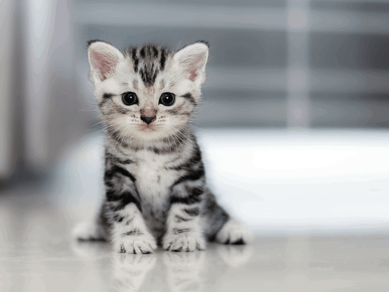

Click "Auto Forward" to automatically move forward every 3 seconds.
Click "Auto Back" to automatically move backward every 3 seconds.
Click "Stop" to stop the automatic slideshow.
You can still use "Forward" and "Backwards" buttons anytime.